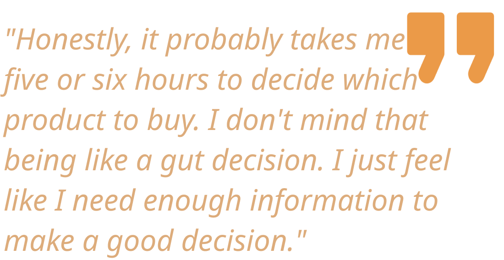
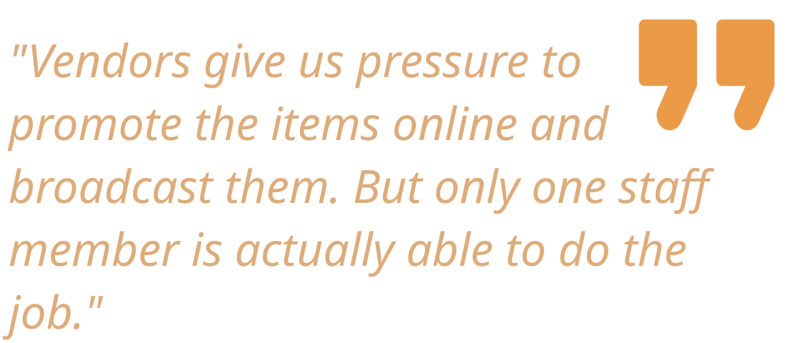
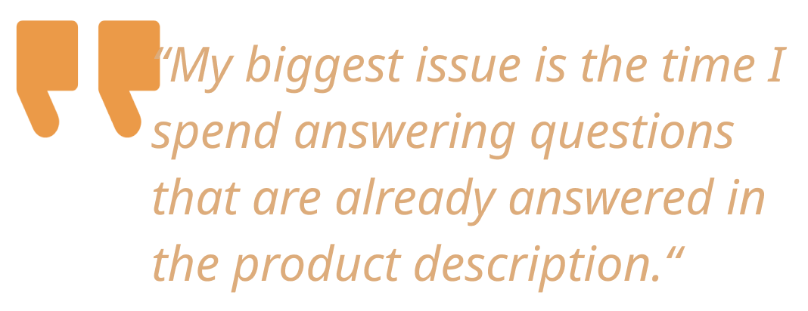

For this project, our team was tasked to develop our own digital service innovation. Through domain research, customer interviews, and multiple rounds of reviews, our team narrowed the goal of our design to better bridge the gap between customers, shop-owners and salespeople in the context of online shopping. As a solution, we came up with a service that connects Etsy/Shopify owners to freelance salespeople in order to live stream high-ticket products on their website, personally connect with customers, and enhance their e-commerce presence.
UX Designer
UX Researcher
8 Weeks
Bill Guo, Al Nejmeh, Sachi Shah
Opportunity Framing
At the beginning of the project, our initial idea was to help artist connect with businesses and apply their creative skills in non-traditional applications.
We first completed the reverse assumption activity to brainstorm and consolidate a series of possible problem statements to guide our research. Some statements that our team shared collective interests on are:
 1. Reverse Assumption
1. Reverse Assumption
How might we help connect artists to spark more creativity needed by the industries?
How might we enable artists to apply their skills to different industries outside their immediate field?
How might we show the value that artists can provide businesses?
Keeping these problem statements in mind, we then take a look into the competitive landscape for our proposed service through conducting Competitor Analysis. And we identified three main types of competition:
 2. Competitor Analysis
2. Competitor Analysis
1. Professional Networking Platforms
2. Gig Economy Job Platforms
3. Skill-sharing Platforms.
The competitor Analysis not only helped us understand our company positioning in the bigger landscape, it also led to our first pivot: we changed from our previous focus on helping artists to helping people experiencing career pivot in general. Our team then performed PESTLE and SET analysis to further research on the details that will support and influence our service, which led to our first Product Opportunity Gap:
 3. Initial SET/POG Analysis
3. Initial SET/POG Analysis
A service that provides skill-based insights into job-seeking individuals as they pivot in their careers.
However, we soon realized we are trying to tackle too broad of a problem with this POG statement. And we pivoted again to narrow our focus on providing help to retail salespeople, which is one of the most influenced careers by COVID 19 pandemic. We then reconducted our PESTLE and SET analysis, which naturally led us to our second Product Opportunity Gap:
 4. Updated SET/POG Analysis
4. Updated SET/POG Analysis
A service for small businesses to live stream on their own website in order to personally connect with customers and diversify revenue streams.
Customer Discovery
Our proposed service has three stakeholders involved: online shopper, shop owner, and the salespeople. To better support our MVP design, we need to understand the journey and pain points for all three parties involved. Through conducting semi structured interviews, contextual inquiry, direct observations and online surveys, we are able to get the following insights:
Many shoppers find their product research process suffering and time-consuming. It's overwhelming and impossible to process all information online, and it's hard to get customized answers.
In order to ease-up their online shopping journey, many shoppers have attempted to use the chatbots provided on shopping sites. However they often feel frustrated because chatbots cannot provide personal and valuable information.
Salespeople have limited ability to interact with customers and don’t have the appropriate tool to provide first-hand demonstrations remotely.
Small businesses post new arrivals on social media to engage with customers, but theyoften have a low conversion rate between views to purchases and are unsure why.
Small business owners don’t have the time and energy to facilitate online interactions on their own. They are open to adopting new technology and opportunities to help them with this.
MVP Pitch
It took us three pivots to land on our final MVP service: From helping artists match their skillset to other types of work, to helping people pivot their career in general, then to a live-stream shopping service, and finally narrowed to outsourcing sales expert for small online shop owners.


The final MVP we are proposing is Skysales: a media service that connects Etsy/Shopify owners to freelance salespeople in order to live stream high-ticket products on their website, personally connect with customers, and enhance their e-commerce presence.
To better demonstrate our customer’s journey using Skysales, we developed a concept video to be played during the investor showcase. We then formulated the rest of our pitch presentation to provide any supporting information that’s not mentioned in the video.
Next step
Our solution is still a work in progress. With more time and resources, we would like to test and validate our hypothesis in order to mitigate the overall risks associated with the SkySales.